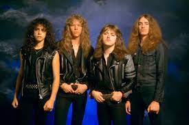

Influences and Background
| Black Sabbath were an English rock band formed in Birmingham in 1968 by guitarist Tony Iommi, drummer Bill Ward, bassist Geezer Butler and vocalist Ozzy Osbourne. They are often cited as pioneers of heavy metal music. The band helped define the genre with releases such as Black Sabbath, Paranoid and Master of Reality. This band has helped define my bluesey riffing style and is the main reference for my lead guitar tones and breakdowns. | |
| Megadeth is an American thrash metal band formed in Los Angeles in 1983 by vocalist/guitarist Dave Mustaine. Mustaine's speedy riffs have helped me experiment more with speed and thrash metal. However, Marty Friedman has had a far larger impact on my lead guitar style and solo writing. | |
|  | Metallica is an American heavy metal band. The band was formed in 1981 in Los Angeles by vocalist and guitarist James Hetfield and drummer Lars Ulrich, and has been based in San Francisco for most of its career. The main influence this band has had on my style is primarily in songwriting and tone. |
| Pantera is an American heavy metal band from Arlington, Texas, formed in 1981 by the Abbott brothers, and currently composed of vocalist Phil Anselmo, bassist Rex Brown, and touring musicians Zakk Wylde and Charlie Benante. Pantera's biggest influence on my sound is double kick grooves and low guitar tunings which has thickened out my style. |